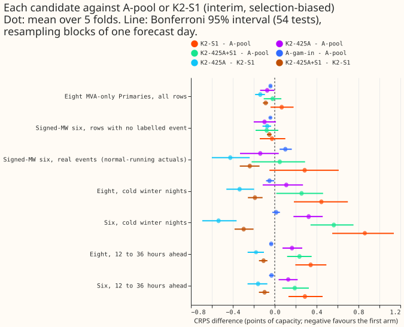
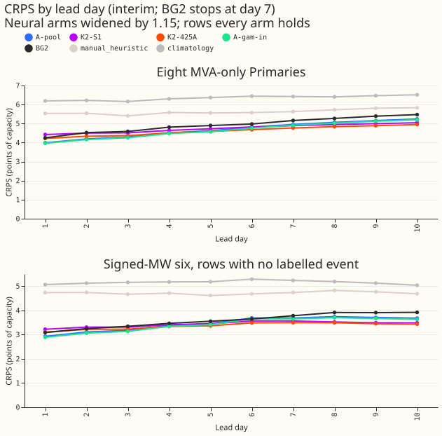
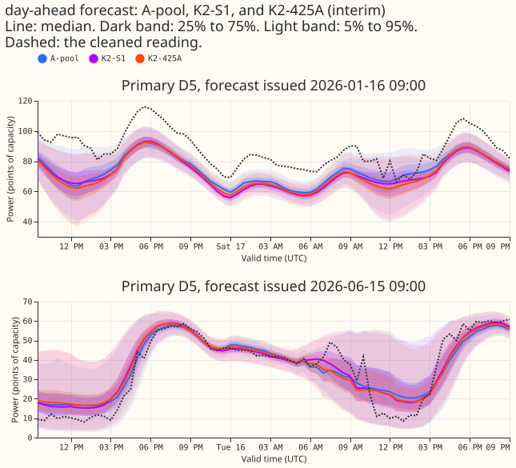
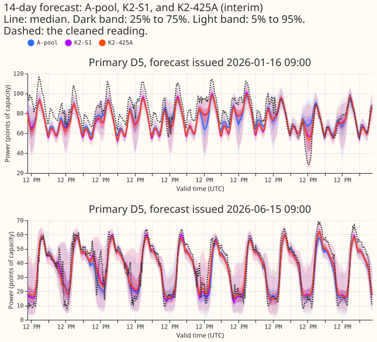
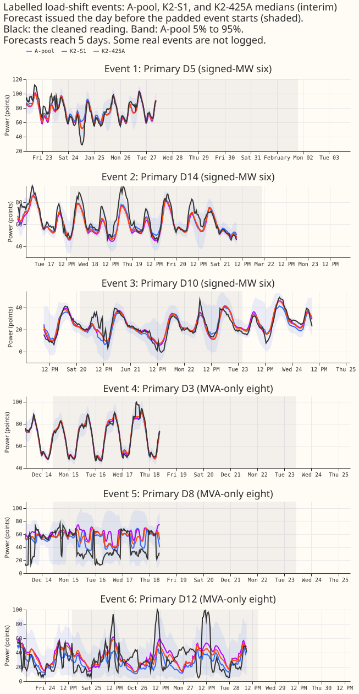

Which assembled demand forecaster should be the first release: one pretrained network, a mixture of lagged and lagless networks, or either of those with the GAM forecast as an input?
Which assembled demand forecaster should be the first release?
Take-home message. The pretrained network scores almost as well as the best mixture and holds up better on cold winter nights and 12 to 36 hours ahead, so the lagged-plus-lagless design adds nothing the 5 months of data can confirm. Recommendation: release A-pool, the five-seed pretrained network, unless the maintainer prefers A-gam-in, the same network with the GAM forecast as an extra input. The lowest scores are K2-425A's (4.608 at the eight MVA-only Primaries and 3.353 at the six signed-MW Primaries, on rows with no labelled event). They are only 0.072 and 0.098 points of capacity below A-pool, against a minimum detectable effect of 0.065 and 0.100 points. The pre-registered rule does not give one robust answer. The plan's tie clause for A-pool and K2-S1 recommends A-pool. The rule's clause-by-clause admissibility test, read literally, leaves only A-gam-in. The choice between those two is the maintainer's. Every score is selection-biased.
We asked which demand forecaster to release first for the 14 Primary substations with a generalised additive model (GAM) forecast: the eight that report in megavolt-amperes (MVA) only, and the six that report in signed megawatts (MW). We took 5 candidates that earlier experiments built, put all of them on the same half-hours (1,145,256 half-hours over 5 test months, 1,003,611 of them at the 14 Primaries), and scored them with the same code. Scores are the continuous ranked probability score (CRPS) in points of capacity, so lower is better. A lagless forecast uses no recent power readings as inputs, and a mixture averages the density of lagged networks and lagless networks. The candidates are the pretrained network alone (A-pool, five seeds averaged; pretrained on ERA5 and CAMS weather and fine-tuned on ensemble weather), three mixtures of lagged and lagless networks (K2-S1, K2-425A, and K2-425A+S1), and A-gam-in. No neural network was refitted. Experiment 425 stored only quantiles for the pretrained network, so a forward pass of its saved networks recovered the mixture parameters. The recovered parameters reproduced the stored quantiles to within 4e-5.
Figure 1 shows the gaps that matter: the mixtures lose on cold nights and 12 to 36 hours ahead.





Results
- Arms. A-pool is experiment 425's arm A, seeds 0 to 4, quantile-averaged. K2-S1 is experiment
454's mixture of 2 S1 networks and 2 lagless networks. K2-425A mixes 2 arm A seeds with 2 lagless
networks, and K2-425A+S1 mixes 1 arm A seed, 1 S1 network, and 2 lagless networks, with the
lagless seeds
(c, (c+1) mod 3)in cellc. A-gam-in is experiment 457'sGin(five seeds). Controls are A-ens2 (2 arm A seeds as a density mixture), B-mix, and the S1 three-seed ensemble. Reuse: experiments 425, 454, and 457 for stored forecasts, experiment 404 for the lagless tables, experiment 449 for the XGBoost forecast, and experiment 472 for the descriptive row. Fits: 0. - Rows. The key is (Primary, forecast origin, target half-hour) on experiment 404's grid. Experiment 454's rows lie inside experiment 425's rows; the 1,520 rows that 425 holds and 454 does not are at D15 and D18 (the two Primaries with no GAM forecast), after the 2025-03-01 start cut. Row sets aregam14(every candidate holds the row, 1,003,611 half-hours at 14 Primaries),main16(all 16 Primaries without A-gam-in, 1,145,256), andref14(gam14rows that BG2,manual_heuristic, climatology, and the XGBoost forecast also hold, 802,838, which cuts days 8 to 10 because BG2 stops at 168 hours). Each month's size is printed bye00470_score.py rows. Scoring actuals dropped for flagged exact zeros: 1,179 in the scoring context. - Scale. CRPS is mass-weighted pinball loss in points of capacity (experiment 404's definition),
so absolute values differ from experiments 454 and 457, which scored other row sets and an
equal-weight definition. The four tail quantiles of every neural arm are widened by 1.15 about the
median; BG2,
manual_heuristic, and climatology are not. - Minimum detectable effect. Arm A's five single seeds give 0.065 points at the eight and 0.100 points at the six, and 0.652 at D15 and D18. The seed spread of the mixtures uses three cells built from overlapping seed pairs, so the values (eight: 0.049 for K2-425A, 0.059 for K2-S1, 0.084 for K2-425A+S1; six: 0.117, 0.104, 0.134) are lower bounds.
- Absolute scores, rows with no labelled event (CRPS in points; the eight on
gam14, the six ongam14):
| Candidate | Eight | Six | Six, real events | Eight, cold nights | Six, cold nights |
|---|---|---|---|---|---|
| A-pool | 4.680 | 3.451 | 22.327 | 4.161 | 5.931 |
| A-gam-in | 4.640 | 3.410 | 22.428 | 4.111 | 5.945 |
| K2-425A | 4.608 | 3.353 | 22.188 | 4.272 | 6.255 |
| K2-425A+S1 | 4.659 | 3.374 | 22.375 | 4.418 | 6.495 |
| K2-S1 | 4.746 | 3.425 | 22.613 | 4.607 | 6.791 |
| A-ens2 | 4.711 | 3.472 | 22.268 | 4.212 | 5.870 |
| B-mix | 4.875 | 3.543 | 22.629 | 4.804 | 6.998 |
| S1-ens3 | 4.910 | 3.616 | 22.952 | 4.752 | 6.799 |
- References on
ref14rows (days 1 to 7 for BG2): at the eight, BG2 4.928, XGBoost 5.045,manual_heuristic5.616, climatology 6.345, against A-pool 4.676 and K2-425A 4.609; at the six (no labelled event), BG2 3.578, XGBoost 3.792,manual_heuristic4.717, climatology 5.159, against A-pool 3.449 and K2-425A 3.357. - Headline contrasts (difference in CRPS, points; negative favours the first arm; Bonferroni 95% interval over 54 tests, block bootstrap of one forecast day):
| Contrast | Eight | Six, no labelled event | Six, real events | Eight, cold | Six, cold | Six, 12 to 36 h |
|---|---|---|---|---|---|---|
| K2-425A minus A-pool | -0.072 (-0.139, -0.003) | -0.098 (-0.201, 0.012) | -0.138 (-0.332, 0.039) | +0.110 (-0.115, 0.270) | +0.324 (0.179, 0.458) | +0.129 (0.037, 0.219) |
| K2-S1 minus A-pool | +0.066 (-0.040, 0.180) | -0.026 (-0.143, 0.101) | +0.286 (-0.050, 0.611) | +0.446 (0.182, 0.699) | +0.860 (0.549, 1.136) | +0.288 (0.131, 0.458) |
| K2-425A+S1 minus A-pool | -0.020 (-0.105, 0.064) | -0.077 (-0.183, 0.034) | +0.048 (-0.220, 0.290) | +0.257 (0.015, 0.462) | +0.564 (0.342, 0.752) | +0.191 (0.072, 0.325) |
| A-gam-in minus A-pool | -0.040 (-0.052, -0.029) | -0.041 (-0.052, -0.031) | +0.101 (0.047, 0.163) | -0.050 (-0.083, -0.005) | +0.014 (-0.023, 0.050) | -0.031 (-0.054, -0.008) |
| K2-425A minus K2-S1 | -0.138 (-0.188, -0.093) | -0.072 (-0.117, -0.034) | -0.424 (-0.601, -0.239) | -0.335 (-0.462, -0.197) | -0.536 (-0.692, -0.364) | -0.159 (-0.259, -0.070) |
- Tails (coverage at q05, q95, q99 after the 1.15 widening, rows with no labelled event; nominal
0.05, 0.95, 0.99). At the eight: A-pool 0.019, 0.949, 0.991; K2-425A 0.014, 0.962, 0.994; K2-S1
0.020, 0.948, 0.989. At the six: A-pool 0.010, 0.923, 0.985; K2-425A 0.007, 0.934, 0.989; K2-S1
0.012, 0.911, 0.979; B-mix 0.013, 0.895, 0.971. At the six, the q95 coverage of A-pool, K2-S1, and
B-mix falls short of 0.95, and the lower tails of every candidate are over-wide (coverage 0.007 to
0.020 against 0.05). q99 pinball loss at the eight is 0.251 for A-pool, 0.247 for A-gam-in, 0.268
for K2-425A, 0.269 for K2-425A+S1, and 0.273 for K2-S1. Table P (experiment 435) raises q05
coverage to 0.038 to 0.052 and lowers q95 to 0.91 to 0.95; per-cell figures are in
tails_summary.csv. -
Curtailment (avoidable-curtailment cost in millions of pounds over the six Primaries and five months, rows with no labelled event; plain 95% bootstrap over month-by-Primary cells). At f = 0.9: A-pool 1.893, K2-S1 1.847, K2-425A 1.865, K2-425A+S1 1.842, A-gam-in 1.881, BG2 1.366, and
manual_heuristic2.017. At f = 0.75: 7.048, 8.222, 7.602, 7.708, 6.959, 8.237, and 12.883. At f = 0.5: 21.629, 26.634, 23.771, 24.543, 21.306, 25.918, and 37.789. At f = 0.5 K2-S1 costs 5.0 more than A-pool (0.85 to 10.5), while K2-425A (2.1, -0.4 to 6.3) is not conclusively different. The saving againstmanual_heuristicat f = 0.75 is 601 pounds per MW per day for A-pool (288 to 992, six Primaries, 49.82 MW, 195 days) and 480 for K2-S1; at f = 0.5 it is 1,663 and 1,148. Our understanding ofmanual_heuristicas NGED's baseline is unconfirmed. -
AvgAnchor (experiment 472; descriptive and unreplicated, outside every count): 4.586 at the eight, 3.131 at the six (0.32 below A-pool, the lowest score of any arm), 23.231 on real-event rows (worse than every candidate), 6.193 on cold winter nights at the six, and q99 pinball 0.293 at the eight, which is worse than A-pool's. It serves four networks. Experiment 472's own page reports that it fails its tail gate and that its real-event result is inconclusive.
Decision rule
- Pre-registered tie clause applies. A-pool and K2-S1 tie at the eight and the six (both Bonferroni intervals include zero; at the eight the gap of 0.066 sits 0.002 above the minimum detectable effect of 0.065), so the plan says the lag design adds nothing over pretraining and recommends A-pool. K2-S1 is also conclusively worse than A-pool on cold winter nights and 12 to 36 hours ahead.
- Admissibility test read literally leaves A-gam-in only (
decision.csv). K2-425A has the lowest CRPS and makes A-pool inadmissible at the eight (gap 0.072 against a minimum detectable effect of 0.065, interval -0.139 to -0.003), but K2-425A fails the q99 clause by 0.0008 (excess 0.0208 against 0.02, measured against the arm with the lowest q99 loss, A-gam-in). K2-425A+S1 fails by 0.0017. A-gam-in passes every clause through the inconclusive route, but it needs the GAM at serving time. - Three margins decide which candidate the rule selects. The audit found three: A-pool's conclusiveness at the eight (0.0715 against 0.0645, interval edge -0.003), A-gam-in's gaps (0.032 and 0.057, over the 0.03 tolerance, admissible only because they are inconclusive), and the q99 margin of K2-425A. Measuring the q99 excess against A-pool makes K2-425A and K2-425A+S1 pass, and then the rule picks K2-425A.
- Production requirements. A-pool: 5 neural networks per forecast, 5 pretrained and 5 fine-tuned fits per monthly refit, no lagless table. K2-S1 and K2-425A+S1: 4 networks, the lagless table and, for S1, the store of past lagless forecasts that S1's surprise inputs read. K2-425A: 4 networks and the lagless table but no store. A-gam-in: 5 networks plus the GAM forecast in the serving path with its own monthly refit.
Checks
-
Median minus mean forecast per Primary (points of capacity, mean-forecast from the quantile masses): at the eight, A-pool -1.70 to -0.03, K2-425A -2.23 to +0.23, K2-S1 -1.91 to +0.32; at the six, A-pool -0.67 to -0.07 and K2-S1 -0.75 to -0.01. No candidate's median sits far from its mean.
-
Mean-forecast error beside the contrasts. Mean absolute error of the mean forecast at the eight: A-pool 6.833, K2-425A 6.779, K2-S1 6.940, A-gam-in 6.774; at the six (no labelled event): A-pool 4.895, K2-425A 4.805, K2-S1 4.855, A-gam-in 4.827. Every sign matches the CRPS contrast. Trigger 3 (the mean-forecast error contradicting the CRPS contrast) did not fire.
- Triggers that fired. Trigger 2 (the result contradicts prediction P3: K2-425A and K2-425A+S1 are 0.24 to 0.42 points better than K2-S1 on real-event rows, where they were predicted to be no better) and trigger 4 (leaving one Primary out flips K2-425A+S1 minus A-pool at the eight and K2-S1 minus A-pool at the six). A fresh Sonnet audit re-derived the absolute scores, the contrasts, and the intervals from the raw stored forecasts (agreement to 4 decimals; intervals within 0.002) and found no artefact in P3's contradiction: one Primary holds 29,436 of the 50,168 real-event rows, and there K2-425A beats K2-S1 by 0.75 points. The audit also found that two Primaries drive each leave-one-out flip. The audit's margins are in "Decision rule".
Caveats
- Selection bias. The five folds (2025-10, 2025-12, 2026-01, 2026-03, 2026-06) both choose and
score the candidate. The first month in none of the folds of experiments 404, 425, 435, 448, 454,
and 457 is July 2026, which is held back for a finalist. Scoring July 2026 needs the monthly refit
with 24 months of training, the arm A pipeline of experiment 425 (
e00425_fit.py), and the scorer of this experiment on the new rows. The maintainer can run it when July 2026 lands. That scoring is not a gate here. - Interval width. The bootstrap resamples one forecast day per block. Each target half-hour appears under up to 10 consecutive origin days, so neighbouring blocks share weather and actuals. The intervals are therefore probably too narrow.
- Unlogged events. NGED says its load-shift logs miss events, so rows with no labelled event may hold unlabelled events, and the real-event slice undercounts.
- Scope. The 5 months and 14 Primaries with a GAM scored here; D15 and D18 are report-only (minimum detectable effect 0.65), where A-pool scores 10.648, A-gam-in 10.680, K2-425A 11.163, and K2-S1 11.319. The curtailment intervals are plain 95% intervals, not Bonferroni, and cover six Primaries.
What to try next
- Score the winner on July 2026 when it lands, with the same scorer.
- Decide whether the 0.001 q99 margin or the tie clause governs, and whether the 0.9% CRPS gain at the eight justifies running the GAM at serving time.
- Test arm A and K2-425A with a lagless head trained on ERA5 weather, to see whether the cold-night gap closes.